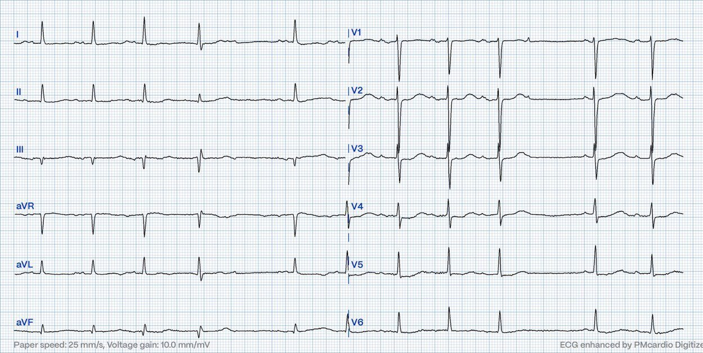
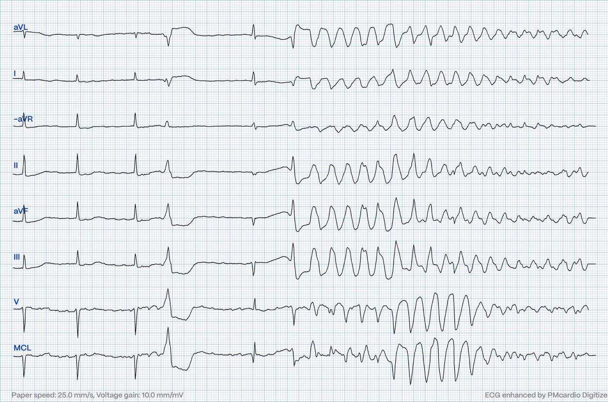
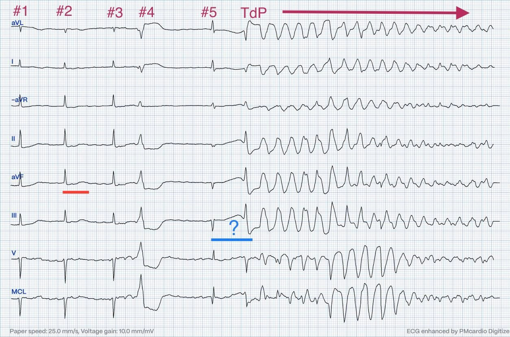
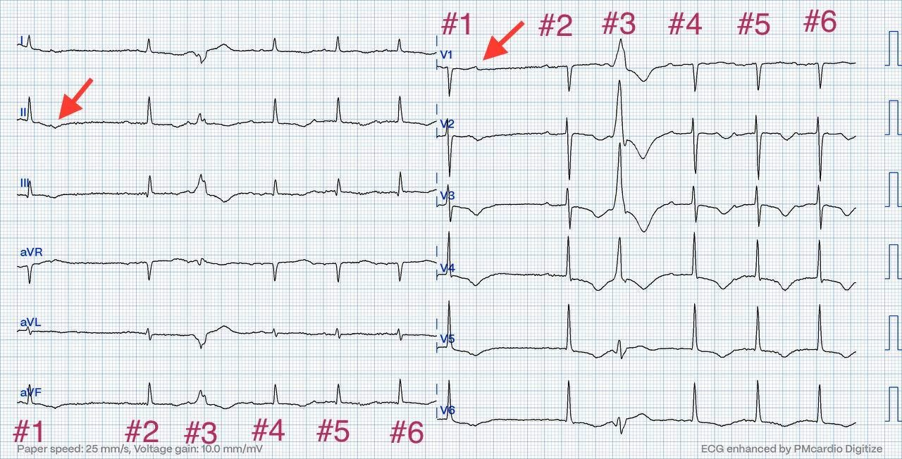
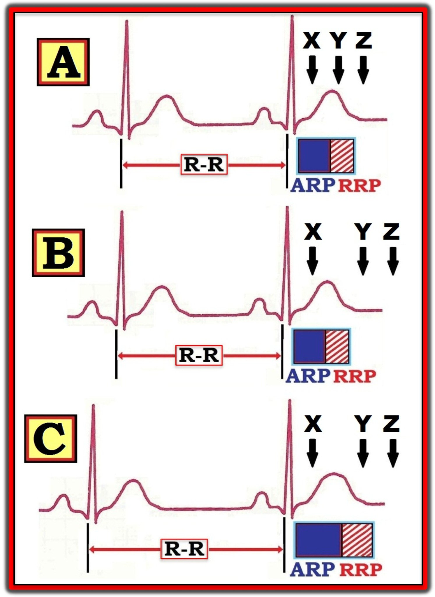
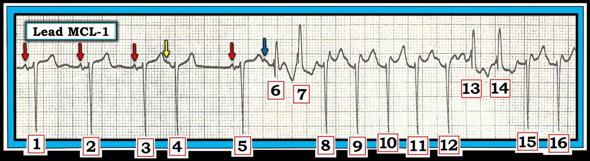

16/09/2024 — Khoảng ngưng có thể gây ngừng tim như thế nào
Bản dịch tiếng Việt của bài "How a pause can cause cardiac arrest" – Dr. Smith’s ECG Blog. Giữ nguyên toàn bộ 6 hình ảnh của bản gốc.
Tác giả: Magnus Nossen — với phần biên tập của Grauer.
= = =
Các bản ghi trong ca hôm nay là của một bệnh nhân nam ngoài 80 tuổi nhập viện vì khó thở. Dưới đây là điện tâm đồ lúc nhập viện. Bạn nghĩ gì?


= = =
Điện tâm đồ trên cho thấy nhịp xoang. Có một ngoại tâm thu nhĩ (PAC) bị blốc và điều này gây ra một khoảng ngưng ngắn. Sóng P xoang tiếp theo được dẫn truyền với khoảng PR hơi ngắn hơn. Có ST chênh xuống nhẹ ở các chuyển đạo V4-V5, có thể do thiếu máu cục bộ. Không có dấu hiệu rõ ràng của nhồi máu cơ tim do tắc (OMI). Bệnh nhân được nhập viện và theo dõi từ xa (telemetry).
= = =
Trong khi đang được theo dõi từ xa, bệnh nhân bị ngừng tim và đã được hồi sức.
- Dấu hiệu điện tâm đồ nào có thể đã góp phần gây ra (hoặc khởi phát) cơn ngừng tim?


Khoảng R-R của 3 nhát dẫn truyền bình thường đầu tiên trong dải nhịp trên trông đều. QTc kéo dài.
- Tôi đo được QT là 520ms (13 ô nhỏ, mỗi ô 40ms). Vì tần số tim là 60 lần/phút — QTc sẽ bằng QT.
- Lưu ý: Do số nhát dẫn truyền bình thường có hạn — khó chắc chắn nhịp nền là nhịp xoang kèm nhiễu đường nền hay rung nhĩ.
- Có 2 PVC. PVC thứ hai khởi phát một loạt VT đa dạng (polymorphic VT) kéo dài đến cuối bản ghi — và vì QTc kéo dài, đây là TdP ( = Torsades de Pointes, xoắn đỉnh).
= = =
Dưới đây là dải nhịp đã được chú thích:


Các phức bộ QRS đã được đánh số cho rõ. Nhát #4 là một PVC, theo sau là một khoảng nghỉ bù. Khoảng ngưng kết thúc bằng một phức bộ QRS hẹp (nhát #5). Khoảng QT của nhát #5 (đường màu xanh lam) kéo dài đáng kể. Đáng chú ý — khoảng QT của nhát #5 kéo dài rõ rệt so với khoảng QT ở đầu bản ghi (đường màu đỏ). Đây là hiện tượng QTc kéo dài phụ thuộc khoảng ngưng (được mô tả là nguyên nhân thường gặp nhất gây TdP ở bệnh nhân có hội chứng QT dài (LQTS)).
= = =
Sau hồi sức và khử rung, không còn cơn TdP nào nữa. Nếu có các cơn TdP phụ thuộc khoảng ngưng tái phát — tạo nhịp thất tạm thời ở tần số tim cao hơn sẽ được chỉ định để ức chế các khoảng ngưng, và qua đó giảm nguy cơ xuất hiện thêm các cơn TdP.
= = =
Sau tái lập tuần hoàn tự nhiên (ROSC), bệnh nhân tỉnh táo và hợp tác.
- Bệnh nhân được chụp mạch vành và kết quả không cho thấy bệnh động mạch vành đáng kể.
- Siêu âm tim cho thấy mỏm tim phình dạng bóng kèm giảm động.
- NT-proBNP tăng đáng kể, ở mức 4900ng/L (tham chiếu < 500ng/L).
- Troponin T độ nhạy cao tăng nhẹ, đạt đỉnh 107ng/L (tham chiếu < 14ng/L).
= = =
Dưới đây là điện tâm đồ 12 chuyển đạo của bệnh nhân sau khử rung.
- Điện tâm đồ này cho bạn biết điều gì?


= = =
Điện tâm đồ cho thấy nhịp xoang. Ẩn trong đoạn ST của nhát #1 là một sóng P không dẫn truyền (mũi tên đỏ).
- Sóng P không dẫn truyền này có thể là một PAC. Nó cũng có thể là một phần của chu kỳ Wenckebach (nhát bị rớt). Khoảng PR của các nhát #4-6 có vẻ hơi dài hơn (280ms) so với nhát #2 (240ms). Chỉ có 6 nhát trong điện tâm đồ này, vì các chuyển đạo trước tim và chuyển đạo chuẩn được ghi đồng thời — vì vậy cần một dải nhịp dài hơn để đánh giá tốt hơn điều gì đang diễn ra.
- LƯU Ý: Trong thời gian theo dõi từ xa, bệnh nhân có lúc rung nhĩ, lúc nhịp xoang kèm blốc AV độ 1, và cũng có những giai đoạn dẫn truyền Wenckebach. Dù vậy — việc phân tích nhịp ở đây mang tính học thuật nhiều hơn — vì các dấu hiệu nổi bật nhất là sóng T đảo ngược lan rộng và QT kéo dài.
Bệnh nhân được chẩn đoán bệnh cơ tim do stress (Takotsubo). Sóng T đảo ngược lan rộng và khoảng QT kéo dài không hiếm gặp trong bệnh cơ tim Takotsubo.
- Lúc nhập viện, magnesi huyết thanh là 0,56 mmol/l (tham chiếu 0,71-0,94 mmol/l).
- Kali là 4,8 mmol/l. (tham chiếu 3,5-4,6 mmol/l).
- Bệnh nhân không dùng thuốc nào đã biết là gây kéo dài khoảng QT.
- Sau khi bù magnesi, QTc không ngắn lại đáng kể.
= = =
Kết luận:
Bệnh nhân hôm nay bị ngừng tim thứ phát do QTc kéo dài phụ thuộc khoảng ngưng trên nền QTc vốn đã kéo dài do bệnh cơ tim Takotsubo. Hạ magnesi máu có thể đã góp phần — tuy nhiên QTc vẫn còn rất dài ngay cả sau khi bù magnesi. Sau đó QTc ngắn dần trong vài ngày, như thường thấy trong bệnh cơ tim do stress.
= = =
Những điểm cần học:
- Bệnh cơ tim Takotsubo có thể dẫn đến ngừng tim do rối loạn nhịp thất. Do đó — theo dõi từ xa được chỉ định trong giai đoạn cấp.
- TdP phụ thuộc khoảng ngưng là nguyên nhân thường gặp nhất gây ngừng tim ở bệnh nhân có LQTS. Nhiều khả năng điều này cũng đúng với bệnh nhân có khoảng QT dài mắc phải.
= = =
======================================
BÌNH LUẬN CỦA TÔI, bởi KEN GRAUER, MD (16/9/2024 — Cập nhật ngày 22/11/2025):
Bài viết hôm nay của BS. Nossen làm nổi bật một khái niệm quan trọng — đó là sự khởi phát phụ thuộc khoảng ngưng một rối loạn nhịp thất ác tính (trong ca này là xoắn đỉnh — Torsades de Pointes).
- Ý nghĩa lâm sàng của khái niệm này vượt ra ngoài cơn xoắn đỉnh được trình bày trong bài hôm nay — ở chỗ nguyên lý then chốt liên quan trong xoắn đỉnh phụ thuộc khoảng ngưng cũng chính là nguyên lý then chốt vận hành trong hiện tượng Ashman (vốn thường được nhắc tới, nhưng lại quá thường xuyên bị hiểu sai).
Tôi đã định kỳ lưu ý đến các ví dụ về hiện tượng Ashman khi chúng xuất hiện trên Dr. Smith’s ECG Blog (Xem Bình luận của tôi trong bài ngày 5 tháng Một năm 2020 — bài ngày 17 tháng Sáu năm 2020 — và bài ngày 30 tháng Ba năm 2023, cùng các bài khác).
- ĐIỂM THEN CHỐT (PEARL) #1: Cách đơn giản nhất để mô tả hiện tượng Ashman — là nó thể hiện dẫn truyền lệch hướng phụ thuộc khoảng ngưng. Và cách dễ nhất để nhận ra hiện tượng này là nhớ rằng “nhát trông lạ nhất — nhiều khả năng nhất là nhát đi sau khoảng ngưng dài nhất”. Rõ ràng là có ngoại lệ — nhưng tôi luôn nghĩ đến dẫn truyền lệch hướng liên quan đến Ashman khi các nhát rộng, trông khác biệt thường gặp nhất ngay sau một khoảng ngưng nhẹ trong nhịp.
= = =
Cơ sở lý giải hiện tượng Ashman:
Nguyên lý MẤU CHỐT của hiện tượng Ashman là tính phụ thuộc khoảng ngưng — tức là RP (thời kỳ trơ — Refractory Period) phụ thuộc vào độ dài của khoảng R-R đi trước. Khái niệm này được giải thích rõ nhất qua Hình 1:
- Ô A trong Hình 1 minh họa bằng sơ đồ rằng một xung động sớm (PAC hoặc PJC) xảy ra trong ARP (thời kỳ trơ tuyệt đối — Absolute Refractory Period — tương ứng với điểm X) sẽ bị blốc.
- Ngược lại — một PAC (hoặc PJC) xảy ra sau khi tái cực đã hoàn tất (tương ứng với Z trong Ô A) — sẽ được dẫn truyền bình thường.
- Dẫn truyền lệch hướng chỉ xảy ra NẾU một xung động sớm xuất hiện trong RRP (thời kỳ trơ tương đối — Relative Refractory Period — tương ứng với điểm Y trong Ô A).
Các diễn biến trong Ô B — gợi ý một tình huống lâm sàng khác.
- Một lần nữa — các điểm X, Y và Z biểu thị thời điểm giả định của 3 PAC.
- Xung động sớm X một lần nữa sẽ bị blốc (vì nó xảy ra trong ARP).
- Tuy nhiên, lần này — cả Y và Z đều rơi ra ngoài RRP — nên cả hai xung động sớm này sẽ được dẫn truyền bình thường xuống thất (vì lúc này hệ thống dẫn truyền trong thất đã hồi phục hoàn toàn và dẫn truyền bình thường).
Điểm MẤU CHỐT: Việc một xung động sớm có rơi vào trong RRP (và dẫn truyền lệch hướng) hay không — sẽ phụ thuộc vào: i) Khoảng ghép (coupling interval) của nhát sớm (tức là, PAC hoặc PJC xảy ra sớm bao lâu sau phức bộ QRS đi trước); — và, ii) Độ dài của khoảng R-R ngay trước nhát bất thường (giãn rộng). Đó là vì thời gian của RP tỷ lệ thuận với độ dài của khoảng R-R đi trước. Khi tần số tim chậm lại (như trong Ô C của Hình 1) — ARP và RRP sau đó sẽ cùng kéo dài!
- Ô C — cho thấy tác động của việc nhịp chậm lại lên sự dẫn truyền của 3 PAC từ Ô B. Xung động sớm X một lần nữa sẽ bị blốc (vì nó xảy ra trong ARP, khi không xung động nào, dù mạnh đến đâu, có thể được dẫn truyền).
- Xung động sớm Z một lần nữa sẽ được dẫn truyền bình thường (vì nó xảy ra sau khi RP đã kết thúc).
- Tuy nhiên, xung động sớm Y (vốn trong Ô B xảy ra sau khi tái cực đã hoàn tất) — giờ đây sẽ được dẫn truyền kèm lệch hướng (vì khoảng R-R đi trước giờ đây dài hơn trong Ô C — qua đó kéo dài RRP, lúc này kéo dài tới mức bao trùm thời điểm của Y).
= = =
Hình 1: Minh họa tác động của khoảng R-R đi trước lên thời gian của thời kỳ trơ tiếp theo (Xem phần bài viết)


= = =
Nhịp trong Hình 2: Một bức tranh đáng giá 1.000 lời …
- Nhịp trong Hình 2 là của một bệnh nhân khác. Nhịp bắt đầu bằng 3 nhát dẫn truyền từ xoang.
- Nhát #4 là một PAC (sóng P sớm được đánh dấu bằng mũi tên VÀNG).
- Sau một nhát xoang khác ( = nhát #5) — xuất hiện một loạt nhát nhanh và không đều, với mất hoạt động nhĩ sau nhát #6.
- XIN NHẤN MẠNH: Mặc dù nhát #6 rộng — nhát này cũng là một PAC (mũi tên XANH LAM đánh dấu sóng P sớm đi trước nhát #6, tạo khía trên sóng T của nhát #5). Nhưng có 3 nhát rộng khác trong cơn nhịp nhanh bắt đầu từ nhát #6 ( = các nhát #7; 13,14).
= = =
Áp dụng hiện tượng Ashman vào Hình 2:
- Mặc dù trong Hình 2 — khoảng ghép của 2 sóng P sớm được đánh dấu bằng mũi tên VÀNG và mũi tên XANH LAM gần như giống hệt nhau — lý do nhát #6 được dẫn truyền với lệch hướng kiểu RBBB (trong khi nhát #4 được dẫn truyền bình thường) — là vì nhát #6 đi sau một khoảng R-R dài hơn (tức là, khoảng R-R giữa nhát #4-5 dài hơn khoảng R-R giữa nhát #2-3).
- Nói đơn giản — nhát “trông lạ” đi sau khoảng ngưng dài hơn (do đó nhát sớm #6 được dẫn truyền lệch hướng — trong khi nhát #4 sớm tương đương lại được dẫn truyền bình thường).
- ĐIỂM THEN CHỐT (PEARL) #2: Về mặt lâm sàng, một khi chúng ta biết rằng nhát #6 là một PAC dẫn truyền lệch hướng — việc phân tích phần còn lại của dải nhịp này trở nên dễ dàng. Các nhát rộng trông tương tự #7,13,14 hẳn cũng là các xung động trên thất dẫn truyền lệch hướng — và vì sóng P mất đi sau nhát #6 và các khoảng R-R sau đó không đều — các nhát từ #7 đến 16 tạo thành một cơn AFib nhanh.
= = =
Hình 2: Áp dụng hiện tượng Ashman vào rối loạn nhịp này.
- LƯU Ý: Chuyển đạo MCL-1 là một chuyển đạo theo dõi bên phải cho góc nhìn tương tự như chuyển đạo V1 trên bản ghi 12 chuyển đạo — do đó hình dạng QRS của các nhát rộng #6,7; 13,14 phù hợp với lệch hướng kiểu RBBB.


T.B. (P.S.) (Vượt ra ngoài phần cốt lõi): Hiện tượng Ashman kém tin cậy hơn trong AFib. Đó là vì trong AFib — có dẫn truyền “ẩn” của 400-600 xung động nhĩ, khiến không thể chắc chắn từ điện tâm đồ bề mặt về tác động của các “sóng rung” lên thời kỳ trơ tương đối trong nút AV.
- Theo kinh nghiệm của tôi — tôi vẫn tiếp tục tìm hiện tượng Ashman (tức là, các khoảng dài-ngắn) khi có AFib, vì chúng thường (nhưng không phải luôn luôn) vẫn có giá trị dự báo dẫn truyền lệch hướng (kiểu Ashman). Dù vậy — điều quan trọng là cũng phải tìm các dấu hiệu điện tâm đồ khác (tức là, hình dạng QRS) khi đánh giá nguyên nhân của các nhát rộng trên nền AFib, vì riêng hiện tượng Ashman thì kém tin cậy hơn trong tình huống này.
= = =
Quay lại với CA bệnh hôm nay:
Theo BS. Nossen — thông điệp “cần nhớ” MẤU CHỐT từ ca hôm nay là chính khoảng ngưng sau nhát thứ 4 trên điện tâm đồ ban đầu hôm nay đã khởi phát Torsades de Pointes (xoắn đỉnh), dẫn đến ngừng tim.
- Phần lớn xoắn đỉnh là kết quả của một tác động phụ thuộc khoảng ngưng tạo thuận lợi cho sự xuất hiện rối loạn nhịp ác tính (Dohadwala và cs. — Heart Rhythm Case Rep 3(2):115-119, 2017).
- Các khoảng ngưng dài-ngắn từng lúc làm tăng nguy cơ xoắn đỉnh còn nhiều hơn cả nhịp chậm kéo dài hay blốc AV ổn định với đáp ứng thất chậm — vì ngoài việc kéo dài RP, các khoảng ngưng dài-ngắn còn làm tăng không tương xứng độ phân tán thời gian tái cực thông qua một tác động không đồng nhất lên mô cơ tim.
KẾT LUẬN: Nguyên lý là như nhau. Một khoảng R-R dài hơn đi kèm với sự chậm lại thoáng qua của một nhịp tim nào đó dẫn đến sự kéo dài phụ thuộc khoảng ngưng của RP tiếp theo.
- Với một số nhịp trên thất — điều này có thể dẫn đến dẫn truyền lệch hướng (hiện tượng Ashman) của nhát sớm tiếp theo (tức là, như nhát #6 trong Hình 2).
- Trên một bệnh nhân có yếu tố thuận lợi (bệnh nhân lớn tuổi hôm nay, có hạ magnesi máu và QTc nền kéo dài do bệnh cơ tim Takotsubo) — tác động phụ thuộc khoảng ngưng lên một QTc vốn đã kéo dài đã khởi phát một loạt cơn xoắn đỉnh (Torsades de Pointes).
- LƯU Ý: Với những ai thắc mắc về cách viết “đúng” của TdP (Torsades de Pointes) — tôi điểm lại các cách viết thay thế có thể có của thuật ngữ tiếng Pháp này trong phần T.B. (P.S.) của Bình luận của tôi ở cuối trang trong bài ngày 2 tháng Chín năm 2024 trên Dr. Smith’s ECG Blog.
= = =
= = =